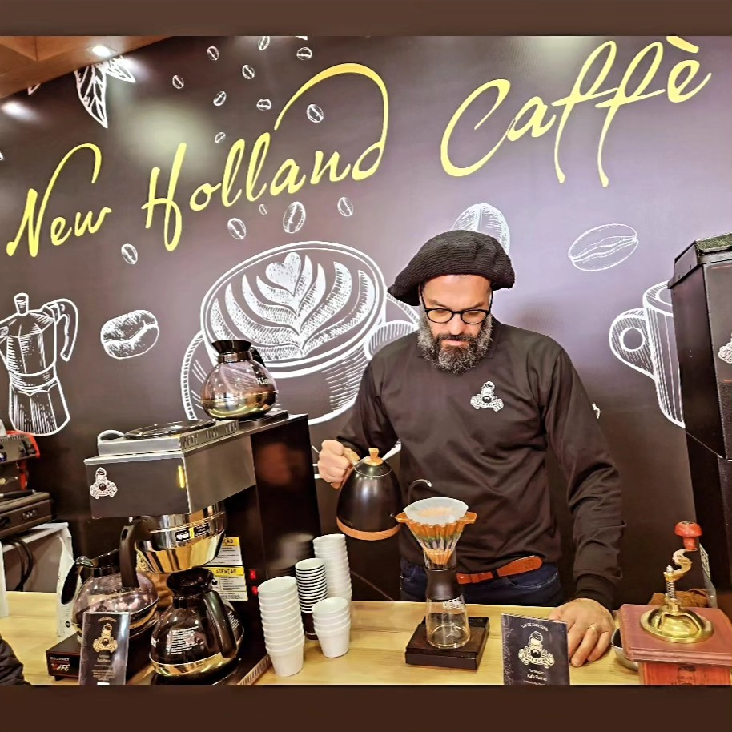
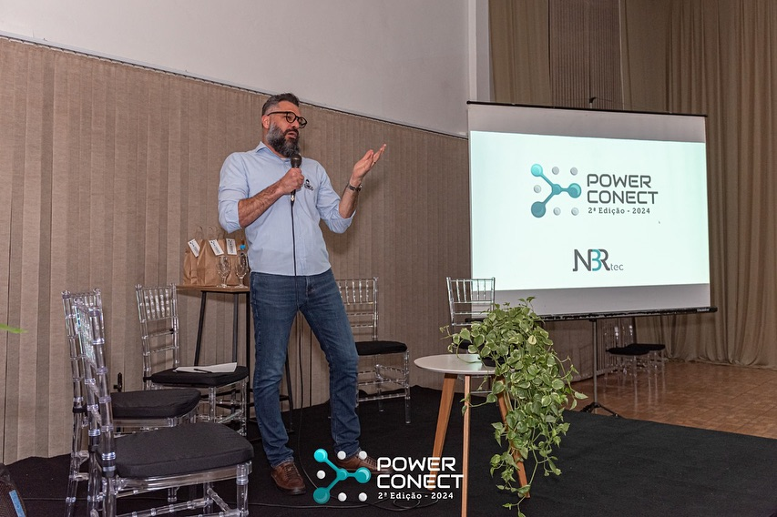

Esteio/RS
Expointer • New Holland do Brasil
Máquinas e café Rafa Palma integrados ao estande para receber clientes e convidados.
Rafa Palma • Especialista em Café
Experiências com café especial que transformam encontros em momentos memoráveis.

Experiência Rafa Palma
Do primeiro aroma à última xícara, cada detalhe é pensado para acolher, aproximar pessoas e tornar o evento inesquecível.
Experiências Rafa Palma
Feiras, empresas, workshops e experiências que levam café especial para o centro das conexões.
Máquinas e café Rafa Palma integrados ao estande para receber clientes e convidados.

Do grão à xícara. Da lavoura à celebração.

Uma experiência personalizada em um espaço de inspiração parisiense.

Workshop, conhecimento, inclusão e café como instrumento de conexão.

Tecnologia, networking e café especial.

Café especial Rafa Palma no estande da New Holland.

Rafa Palma pelo Brasil
Cada cidade, um novo capítulo.
Estrutura, equipe e experiência viajando para fazer o café acontecer onde o cliente estiver.
Do grão à xícara
É preciso conhecer o café, entender cada grão e respeitar cada etapa. Da seleção à torra, cada detalhe envolve estudo, técnica e dedicação.
É assim que transformamos café em experiência.

 Torrefação Rafa Palma • Palmeira das Missões/RS
Torrefação Rafa Palma • Palmeira das Missões/RS
Quem é
Especialista em Café
Há quase duas décadas dedicado ao universo do café, Rafa Palma transforma conhecimento, técnica e sensibilidade em experiências que aproximam pessoas.
Da torrefação própria aos grandes eventos, das experiências com café às soluções para empresas, cada preparo carrega o mesmo cuidado: respeitar o café, valorizar sua história e entregar uma experiência memorável.
“O café vai muito além da xícara. Ele conecta, acolhe, emociona e cria memórias.”
Café também é conhecimento
Métodos, torra, degustação, interação e aprendizado. Conteúdo que aproxima pessoas e mostra o café de um jeito novo.
 Fenasoja • Estande Sebrae • Santa Rosa/RS
Fenasoja • Estande Sebrae • Santa Rosa/RS
Café Rafa Palma na sua casa
O café da experiência Rafa Palma, também na sua xícara.
Cafés especiais selecionados e torrados por Rafa Palma em nossa própria torrefação. Escolha em grãos ou moído e receba em qualquer lugar do Brasil — para apreciar em casa ou transformar em presente.
Rafa Palma na sua empresa
Leve a experiência Rafa Palma para dentro da sua empresa. Café especial, máquinas e uma solução completa para proporcionar qualidade e praticidade todos os dias — para clientes, colaboradores e parceiros.
Venda ou locação de máquinas • Café Rafa Palma

Palmeira das Missões/RS • Café Rafa Palma integrado ao ambiente da empresa, com praticidade e qualidade todos os dias.

Rio de Janeiro/RJ • Café especial como parte da experiência de atendimento do salão.

Panambi/RS • Degustação de café e Käsekuchen.

Venda ou locação · Café Rafa Palma

Essência da marca
Antes de ser produto, o café é encontro. É conversa, acolhimento, família e memória.
Foi ao redor da mesa que muitas histórias começaram — e é essa essência que Rafa Palma leva para cada xícara, cada evento e cada experiência.
Seu próximo evento
Leve a experiência Rafa Palma para sua empresa, feira, exposição, camarote ou evento especial.
Atendimento em todo o Brasil.
Solicitar orçamento pelo WhatsApp